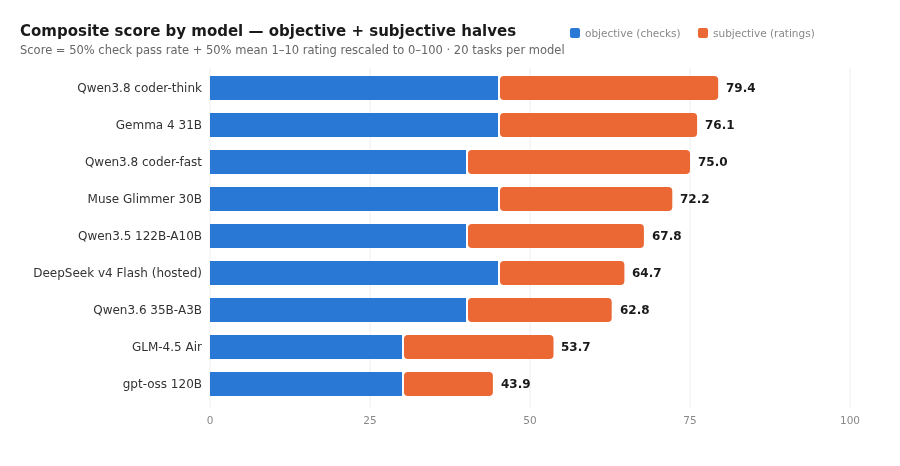
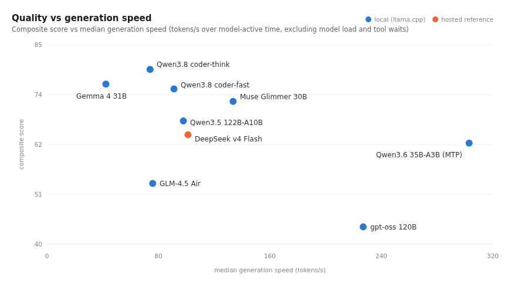
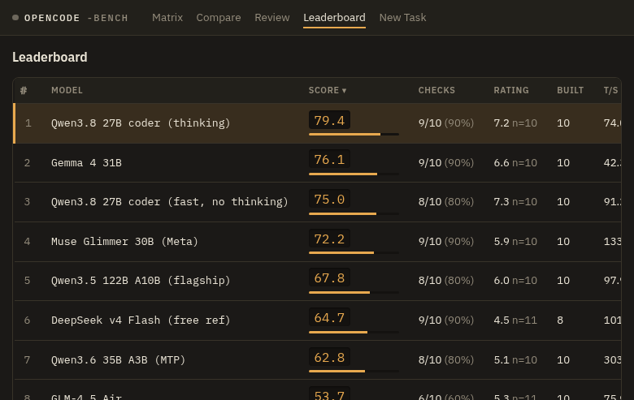
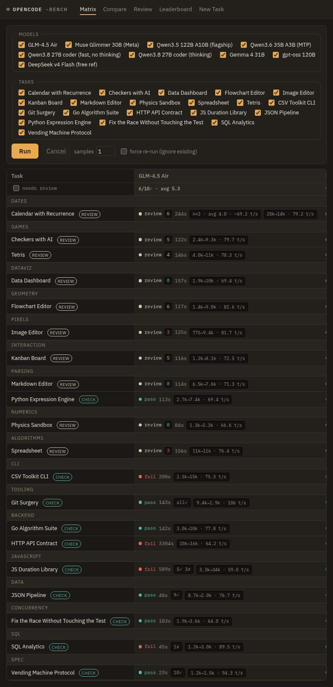

Local Coding-Agent Benchmark: Nine Models on the opencode Harness
Executive summary
- Qwen3.8-27B coder-think is the best overall coding agent tested (score 79.4/100), matching every model on objective checks (9/10) while earning the second-highest subjective quality rating (7.2/10). Its non-thinking sibling trades 2 points of quality for 23% more speed.
- A dense ~30B class model beats much larger MoEs at agentic coding. Gemma 4 31B (#2, 76.1) and the Qwen3.8 27B pair outperform the 122B-A10B flagship (67.8) and gpt-oss 120B (43.9).
- The free hosted reference (DeepSeek v4 Flash) lands mid-pack (64.7), not on top. Its raw capability is high — 9/10 checks, and its completed apps rated up to 10/10 — but it paid a heavy reliability tax on the agent harness: two stalls and repeated failures to emit large files as tool calls. A retry experiment showed this failure is partly non-deterministic (transport/serving) and partly deterministic (model behavior).
- Speed and quality are uncorrelated in this fleet. The two fastest models (Qwen3.6 MTP at 303 tok/s, gpt-oss at 227 tok/s) sit in the bottom half on quality; the quality leaders generate at 42–91 tok/s.
- Local tool-call reliability is a genuine advantage. Zero local runs failed to produce workspace files; the hosted reference failed to do so in 4 of 13 review attempts.

Methodology
Each model runs as an autonomous coding agent through opencode (v1.1.48, auto-approved tools) against a suite of 20 tasks in fresh, git-anchored scratch workspaces. Local models are served by llama.cpp (build 10443) behind llama-swap, which hot-swaps models on demand on a single RTX PRO 6000 Blackwell (96 GB). Jobs run serially, model-major, with a 45-minute task timeout and a 10-minute event-stream idle kill.
Task suite — two kinds:
- 10 review tasks (subjective): deliberately complex, visually verifiable single-page web apps — checkers with minimax AI, Tetris with SRS rotation, a hand-rolled Markdown editor, a spreadsheet with a dependency-graph formula engine, a flowchart editor with orthogonal connector routing, a brushable data dashboard, a physics sandbox, a DST-correct recurring-events calendar, a WIP-limited kanban board, and a convolution-kernel image editor. Each build is played by a human reviewer and rated 1–10 against a written rubric (1–2 non-functional, 3 barely functional, 4–5 semi-functional, 6–7 functional with workarounds, 8–10 fully functional with ascending UI quality).
- 10 check tasks (objective): scripted pass/fail with partial credit — Go algorithm suite (race-detector clean), a Python expression engine, a strict CSV toolkit CLI contract, an HTTP API contract (JWT, ETags, cursor pagination), a fix-the-race task with a hash-protected test file, SQLite analytics with exact-output diffs, a JSON normalization pipeline, a vending-machine protocol spec, git surgery judged on final repository state, and a JavaScript duration library under node’s test runner. Graders restore canonical test files before scoring, so test tampering is impossible.
Scoring. Composite score = 50% objective (fraction of check tasks passed) + 50% subjective (mean 1–10 rating rescaled to 0–100). Generation speed is measured over model-active time from the agent event stream — excluding model load, first-token wait, and tool execution — so hosted and local speeds are comparable. Every run records full provenance (prompt hash, task definition, exact serving configuration).
Integrity notes. Two harness defects were found and fixed during the campaign, and every affected run was invalidated and re-measured: (1) a project-root discovery quirk let absolute-path-preferring models write outside their workspaces (fixed by git-anchoring workspaces; 10 runs re-measured, most on the 122B); (2) a check-script pipe inheritance bug could wedge the runner (fixed with process-group isolation and file-based output capture).
Models tested
| Model | Architecture | Quant / Serving | Context | Notes |
|---|---|---|---|---|
| Qwen3.8-27B (coder-think) | 28B dense hybrid (Gated DeltaNet + Gated Attention) | Q8_0, llama.cpp + MTP self-speculative | 262K | thinking capped at 8192 tokens |
| Qwen3.8-27B (coder-fast) | same weights as coder-think | Q8_0, llama.cpp + MTP | 262K | thinking disabled; instruct sampling |
| Gemma 4 31B it | 31B dense | Q8_0, llama.cpp | 131K | |
| Muse Glimmer 30B | 28B text + 2B vision, dense (Meta) | Q8_0, llama.cpp + DFlash block-diffusion drafter | 131K | |
| Qwen3.5-122B-A10B | 122B MoE, 10B active | UD-Q4_K_XL, llama.cpp | 262K | |
| Qwen3.6-35B-A3B | 35B MoE, 3B active | Q4, llama.cpp + MTP | 262K | |
| GLM-4.5 Air | 106B MoE, 12B active | Q4_K_S, llama.cpp | 131K | |
| gpt-oss-120b | 117B MoE, 5.1B active | Q8_0, llama.cpp | 131K | |
| DeepSeek v4 Flash | hosted, free tier (opencode zen) | n/a (API) | n/a | reference line |
Results
| # | Model | Score | Checks | Rating (n) | Median tok/s |
|---|---|---|---|---|---|
| 1 | Qwen3.8-27B coder-think | 79.4 | 9/10 | 7.20 (10) | 74.0 |
| 2 | Gemma 4 31B | 76.1 | 9/10 | 6.60 (10) | 42.3 |
| 3 | Qwen3.8-27B coder-fast | 75.0 | 8/10 | 7.30 (10) | 91.2 |
| 4 | Muse Glimmer 30B | 72.2 | 9/10 | 5.90 (10) | 133.6 |
| 5 | Qwen3.5-122B-A10B | 67.8 | 8/10 | 6.00 (10) | 97.9 |
| 6 | DeepSeek v4 Flash (hosted) | 64.7 | 9/10 | 4.55 (11) | 101.2 |
| 7 | Qwen3.6-35B-A3B (MTP) | 62.8 | 8/10 | 5.10 (10) | 303.0 |
| 8 | GLM-4.5 Air | 53.7 | 6/10 | 5.27 (11) | 75.9 |
| 9 | gpt-oss-120b | 43.9 | 6/10 | 3.50 (10) | 227.0 |

Findings in detail
1. Thinking helps correctness; costs speed. The two Qwen3.8 variants share weights and differ only in reasoning mode. Thinking lifted checks from 8/10 to 9/10 and held equal subjective quality, at 74 vs 91 tok/s. For overnight batch work, coder-think; for interactive agent loops, coder-fast.
2. Dense mid-size beats sparse large, at agentic coding. The top four are all dense 27–31B models. The 122B and 106B MoEs generate faster per active parameter but produced consistently lower-rated builds; gpt-oss-120b, despite 6/10 checks and 227 tok/s, averaged just 3.5/10 on build quality — fast, technically capable, but its apps were the weakest reviewed.
3. The hosted free reference is a capability peer with a reliability handicap. DeepSeek matched the best locals on checks (9/10) and, when it engaged, built apps the reviewer rated up to 10/10. But in 4 of 13 review attempts it emitted its work as unparseable chat text after a single tool call, and twice it stalled past the 10-minute idle threshold. A controlled retry of its three text-dump failures flipped one to success (evidence of transport/serving flakiness) while two reproduced exactly (deterministic model behavior on large single-file outputs). Local llama.cpp serving, with per-model tool-call templates and no rate limits, exhibited zero such failures across 160+ runs.
4. Speed is architecture, not quality. MTP/speculative decoding gives Qwen3.6 a 303 tok/s median and Muse Glimmer’s DFlash drafter 134 tok/s. Neither converts to quality leadership. Notably, Gemma 4 31B is simultaneously the second-best and the slowest model in the fleet.
Generation statistics
Per-model averages over all completed runs (20–21 per model). Tokens out includes reasoning tokens. Generation time is model-active decode time only — tool execution and model loading are excluded. First token is the wait from request start to the first generated token; the cold column is the worst case, which for local models is the llama-swap model swap (loading tens of GB of weights into VRAM) and for the hosted model is provider queueing.
| Model | Runs | Avg tokens in | Avg tokens out | Total tokens out | Avg gen time | First token (avg) | First token (cold) | Avg wall time |
|---|---|---|---|---|---|---|---|---|
| Qwen3.8-27B coder-think | 20 | 46,394 | 52,008 | 1,040,170 | 750 s | 11.9 s | 74 s | 812 s |
| Gemma 4 31B | 20 | 21,457 | 9,510 | 190,202 | 240 s | 49.1 s | 245 s | 305 s |
| Qwen3.8-27B coder-fast | 20 | 39,943 | 24,697 | 493,945 | 329 s | 2.8 s | 20 s | 419 s |
| Muse Glimmer 30B | 20 | 13,670 | 10,926 | 218,539 | 80 s | 9.8 s | 111 s | 153 s |
| Qwen3.5-122B-A10B | 20 | 11,442 | 8,226 | 164,538 | 84 s | 10.8 s | 68 s | 161 s |
| DeepSeek v4 Flash (hosted) | 21 | 39,066 | 29,122 | 611,564 | 292 s | 51.3 s | 255 s | 441 s |
| Qwen3.6-35B-A3B (MTP) | 20 | 14,222 | 12,468 | 249,362 | 44 s | 2.7 s | 21 s | 81 s |
| GLM-4.5 Air | 21 | 5,137 | 9,748 | 204,713 | 139 s | 9.6 s | 120 s | 307 s |
| gpt-oss-120b | 20 | 14,129 | 5,502 | 110,055 | 27 s | 3.2 s | 54 s | 91 s |
Four things stand out. First, the leaderboard winner bought its ranking with tokens. Qwen3.8 coder-think generated 1.04 million output tokens across 20 tasks — five times the fleet median — and spent 12.5 minutes of pure decode per task. Its sibling coder-fast (thinking disabled) kept 94% of the composite score at half the output volume and roughly half the wall time. Second, speed without volume loses. gpt-oss-120b was by far the quickest agent (91 s average wall time, 27 s of decode) but emitted only 5.5k tokens per task — it rushed minimal solutions, which is exactly what its last-place 43.9 score reflects. Third, input volume tracks agentic thoroughness, not context waste. The two strongest coding-tuned configurations (the Qwen3.8 coder variants and DeepSeek) each read 39–46k tokens per task — re-reading files after edits and verifying their own work — while GLM-4.5 Air averaged just 5.1k tokens in, consistent with its shallow single-pass attempts. Fourth, cold starts are the hidden tax of model-major batching. A llama-swap model swap cost up to 245 s (Gemma) before the first token, and the hosted DeepSeek endpoint queued for up to 255 s — but warm runs started in single-digit seconds on every local model.
The benchmark app
All data was produced and reviewed in opencode-bench: a task×model matrix with per-run provenance, live transcripts, sandboxed app previews, a keyboard-driven review queue with per-task galleries, and a composite leaderboard.


Caveats
- Mostly one sample per cell; agent runs are stochastic. The harness supports N-sample top-ups; pass rates would benefit from n≥3.
- One human reviewer using a written rubric; subjective ratings carry personal taste, especially in the 6–9 band.
- The review suite is browser-app-centric; models stronger at backend work are relatively favored by the check suite only.
- The hosted reference ran on a free tier; a paid frontier endpoint would likely both score higher and stall less.
- Local quants differ (Q8 vs Q4 classes) per VRAM fit; scores measure served configurations, not raw checkpoints.
Appendix: rating rubric
Also served machine-readable by the harness (/api/rubric)
so a future LLM auto-rater can follow the same standard.
| Rating | Definition |
|---|---|
| 1 | Completely non-functional, or fails to load |
| 2 | Loads a UI but missing nearly all major pieces |
| 3 | UI looks correct; multiple major functions broken plus other bugs |
| 4 | One major function broken; multiple minor bugs |
| 5 | One major function broken; few minor bugs |
| 6 | Fully functional with workarounds; multiple minor bugs (e.g. UI broken/ugly) |
| 7 | Fully functional with a workaround; one easily observable minor bug |
| 8 | Fully functional, no minor bugs, substandard UI |
| 9 | Fully functional, no minor bugs, UI meets expectations |
| 10 | Fully functional, no minor bugs, UI surpasses expectations |